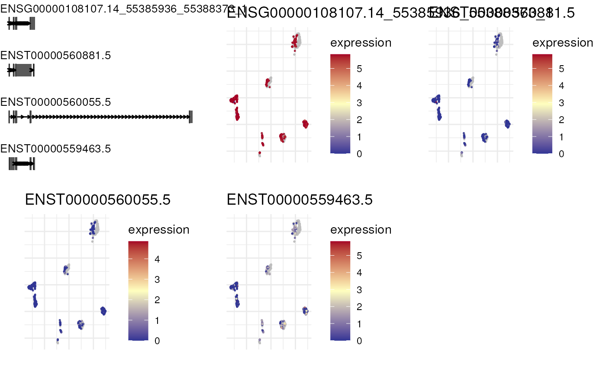
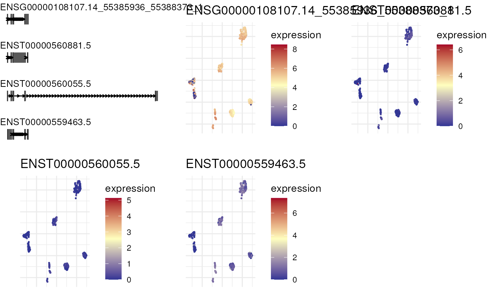

Plot expression of top n isoforms of a gene in reduced dimensions
Usage
plot_isoform_reduced_dim(
sce,
gene_id,
transcript_ids,
n = 4,
reduced_dim_name = "UMAP",
use_gene_dimred = FALSE,
expr_func = function(x) {
SingleCellExperiment::logcounts(x)
},
col_low = "#313695",
col_mid = "#FFFFBF",
col_high = "#A50026",
color_quantile = 1,
format = "plot_grid",
...
)Arguments
- sce
The
SingleCellExperimentobject containing transcript counts,rowRangesandrowDatawithgene_idandtranscript_idcolumns.- gene_id
The gene symbol of interest, ignored if
transcript_idsis provided.- transcript_ids
The transcript ids to plot.
- n
The number of top isoforms to plot from the gene. Ignored if
transcript_idsis provided.- reduced_dim_name
The name of the reduced dimension to use for plotting cells.
- use_gene_dimred
Whether to use gene-level reduced dimensions for plotting. Set to
TRUEif theSingleCellExperimenthas gene counts in main assay and transcript counts inaltExp.- expr_func
The function to extract expression values from the
SingleCellExperimentobject. Default islogcounts. Alternatively,countscan be used for raw counts.- col_low
Color for cells with low expression levels in UMAPs.
- col_mid
Color for cells with intermediate expression levels in UMAPs.
- col_high
Color for cells with high expression levels in UMAPs.
- color_quantile
The lower and upper expression quantile to be displayed bewteen
col_lowandcol_high, e.g. withcolor_quantile = 0.95, cells with expressions higher than 95% of other cells will all be shown incol_high, and cells with expression lower than 95% of other cells will all be shown incol_low.- format
The format of the output, either "plot_grid" or "list".
- ...
Additional arguments to pass to
plot_grid.
Details
Takes SingleCellExperiment object and plots an expression on reduced dimensions
with the isoform visualizations along genomic coordinates.
Examples
scmixology_lib10 <-
scmixology_lib10[, colSums(SingleCellExperiment::counts(scmixology_lib10)) > 0]
sce_lr <- scmixology_lib10[, colnames(scmixology_lib10) %in% colnames(scmixology_lib10_transcripts)]
SingleCellExperiment::altExp(sce_lr, "transcript") <-
scmixology_lib10_transcripts[, colnames(sce_lr)]
combined_sce <- combine_sce(sce_lr, scmixology_lib90)
combined_sce <- combined_sce |>
scuttle::logNormCounts() |>
scater::runPCA() |>
scater::runUMAP()
combined_imputed_sce <- sc_impute_transcript(combined_sce)
#> Imputing transcript counts ...
plot_isoform_reduced_dim(combined_sce, 'ENSG00000108107')
#> Constructing graphics...
#> Constructing graphics...
#> Constructing graphics...
#> Constructing graphics...

plot_isoform_reduced_dim(combined_imputed_sce, 'ENSG00000108107')
#> Constructing graphics...
#> Constructing graphics...
#> Constructing graphics...
#> Constructing graphics...
